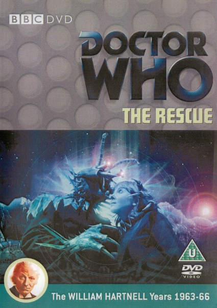
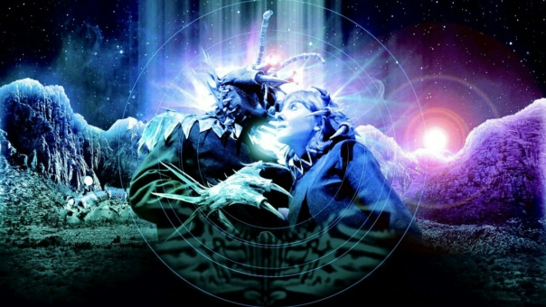

Эра Первого Доктора (2 сезон)
<<< НАЗАД ||| 3. Спасение ||| ДАЛЬШЕ >>>
Субтитры: Русские и Английские |  |
|---|
2-9 января 1965
2 эпизода по 25 мин.
| 1. Могущественный враг 2. Отчаянные меры | Сохранились 16mm t/r |
|---|
 |  |  |
«Спасение» ставит команду перед мрачной загадкой на чужой планете: среди руин космического корабля Доктор раскрывает обман, маскирующийся под угрозу извне. Напряжение держится на игре доверия — ложь одного персонажа грозит погубить всех. Кульминация обнажает человеческую природу как главную опасность, а финал дарит нового спутника и подчёркивает, что спасение порой начинается с правды.
VHS - 17 сентября 1994 |   DVD+BOXSet - февраль 2009 |  Blu-ray - 5 декабря 2022 * Версия в нашей группе |
|---|


